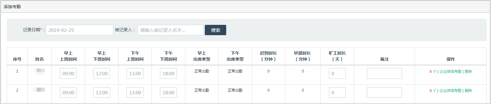

可以使用时间和被记录人，名字进行查询；
【操作管理】栏可以进行查看详情、工作量提醒、修改工作量和删除工作量的操作。
a.点击详情，可以查看考勤详情。
b.点击提醒，系统会给被提醒的人员推送一条工作量提醒的消息，提示用户添加工作量。
c.点击修改，可以修改人员的出勤时间，此处也可以添加备注。
d.点击删除，会发出一个考勤删除的审批申请，申请通过后，该考勤记录将被删除。
管理员可以在后台手动添加考勤。选择需要添加考勤的日期（考勤日期默认添加当天日期），点击搜索，出现添加考勤内容的页面，点击添加，考勤内容添加完成；
a.点击详情，可以查看考勤详情。
b.点击提醒，系统会给被提醒的人员推送一条工作量提醒的消息，提示用户添加工作量。
c.点击修改，可以修改人员的出勤时间，此处也可以添加备注。
d.点击删除，会发出一个考勤删除的审批申请，申请通过后，该考勤记录将被删除。
可以使用日期和被记录人姓名进行查询；
点击提【醒添加计划】，系统会给用户推送一条提醒，通知用户添加计划。
可以使用日期和被记录人姓名进行查询；
点击【工作量小于8小时提醒】，系统会给用户推送一条提醒，通知用户添加工作量。